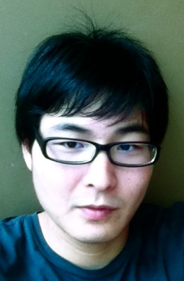

<div id="bio-txt">
    <h3 class="first">Steven SUN Gaopeng - Producer</h3>
    <p>Steven graduated from San Francisco State University in 2010, holding a bachelor's degree of Arts. In 2012, Steven graduated from New York University’s MFA in program. Steven started his profession career by co-producing his first film “The Detective Story” during the final year in SFSU.</p>
    <p>Steven was the assistant editor of film “The Last Days of The Beijing Hutong” - a historical documentary made by the Chinese 6th generation award-winning director. Before moving to San Francisco, he had worked for several award-winning films in various positions such as editor, producer, video technician, etc.</p>
    <p>Steven has worked for World Frequency LLC, an award-winning film company based in the Silicon Valley. He was the line producer of the Sci-Fi film project “T-Minus” (in post-production). The film was shot on the USS-HORNET.</p>
    <p>Steven’s NYU thesis project “MTIA” (media talents in Asia), an interactive project on mobile device caught interest from Samsung and received Tisch Student Council Grant.</p>
    <p>Steven is currently involving in developing and producing several NYU alumni’s films like: “The King of Fun”, written by Sundance awarded filmmaker Thomas Mangan; His own feature “The Bridge” commissioned a Hong Kong award-winning writer. Plus, Steven is writing and producing a half hour TV project.</p>
</div>
